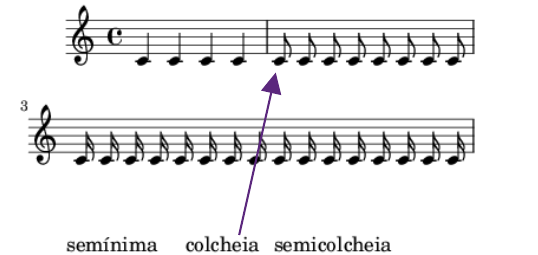

<section class="container-content">
    <div class="d-flex flex-column justify-content-around etapa1-texto">
        <div>
            <h5>A <b>Colcheia</b> indica metade (<math class="math">
                <mfrac>
                    <msup>
                        <mi>1</mi>
                    </msup>
                    <mn>2</mn>
                </mfrac>
            </math>) de 1 tempo, ela é retratada pelo símbolo indicado pela seta:</h5>
        </div>
        <div>
            
        </div>
    </div>
</section>
<div class="btn-etapas-container">
    <div class="btn-container">
        <button id="btn-voltar-context" onclick="btnVoltarEtapas(conteudo_etapa9.etapa9Conteudo26, 9)" class="btn selecao-etapas-btn" role="button">Voltar</button>
    </div>
    <div class="btn-container">
        <button id="btn-avancar-context" onclick="btnAvancar(conteudo_etapa9.etapa9Conteudo28, 9)" class="btn selecao-etapas-btn" role="button">Avançar</button>
    </div>
</div>